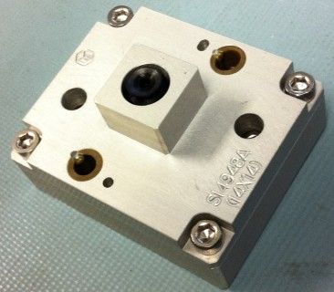

Service History
Subject: NS-8080HW 976BGA 14x14 hot mode device drop issue at index
Handler Model: NS-8080HW (S/N: 182025)
Controller: RC520 (S/N: 03-2061)
Date: 28 Dec 2011
Symptom
NS8080HW 976BGA 14x14 hot mode device drop issue at index.
Action
1. Informed by QC members that socket guide pin loose. Checked and found that screws for tightening socket plate onto loadboard was not tighten properly. This was found out by QC members themselves.
2. Checked handler’s jam history and observed some index device drop error on arm 1 and 2.
3. Removed arm 1 and 2 SLK and checked/tighten again all contactors. Found 1 contactor guide holes condition worn out. Checked all screws on socket plate/loadboard tightened properly.
4. Docked up with socket and ran dummy units at 100% speed and 60% speed, encountered index arm 2 site A device drop errors. When error happened, device was stuck in socket and difficult to remove. No issue on index arm 1.
Docking plate below moved a little up and down during contact with the index arm
5. Undocked and checked site A socket. By using hand to put and push the device into socket A, sometimes device can get stuck. Rest of socket was ok.
6. Rotated socket plate orientation on loadboard, tried to swapped index arm 2 site A contactor with site B contactor. Changed index arm 2 P51 Y pose from –1.05133 to –1.165 after we observed the contactors twisting when going into socket. Checked index arm 2 vacuum ok. After all the above, problem still persisted. Device still get stuck at site A for index arm 2.
7. Undocked again and QC members removed socket A and checked that socket no issue. Swapped the socket to site G.
8. This time docked up with test head and ran dummy units at 60% speed. After about 5 trays, encountered index arm 1 device drop error at site G. Problem seems to migrate over after swapping the socket.
9. CK Tan asked us to run the handler till 5pm to confirm that issue was due to socket and no more issue at site A. Then they will disable that site G and release for production setup. After we completed one hour’s dummy run, there were about 4 device drop errors on site G and 3 on site C for both arm 1 and arm 2. No occurrence on site A.
10.Towards the end of dummy run, while I was clearing stuck device in site G, I accidentally touched the device at index arm 2 site A contactor and resulted in smashed device after I resumed running again. They setup handler with KGU but encountered conty error at site A, and found some damaged pins on this socket. All other sites accept G(disabled) able to pass. It could be due to the smashed device. I informed to CK Tan and he said his tech encountered the same problem before while clearing jam in the index area also. He feedback that it could be due to the design of the nest which does not have anvil guide.

11.They removed the socket to change the damaged pins and CK Tan released us.
Cause
Socket tolerance too tight causing device drop at Index after Index Arms move up.
Remarks
29 Dec 2011 Imai-san emailed Qualcomm:
Summary is that,
1) Device drop error issue seems to be due to setup.
2) Contactor nest design may need to be considered, and we will check with KA.
At the same time, we will check with Qualcomm USA and DB how they are running now.
3) Some Socket seems to have issue, which pocket is a little tight so that sometimes
device stuck inside.